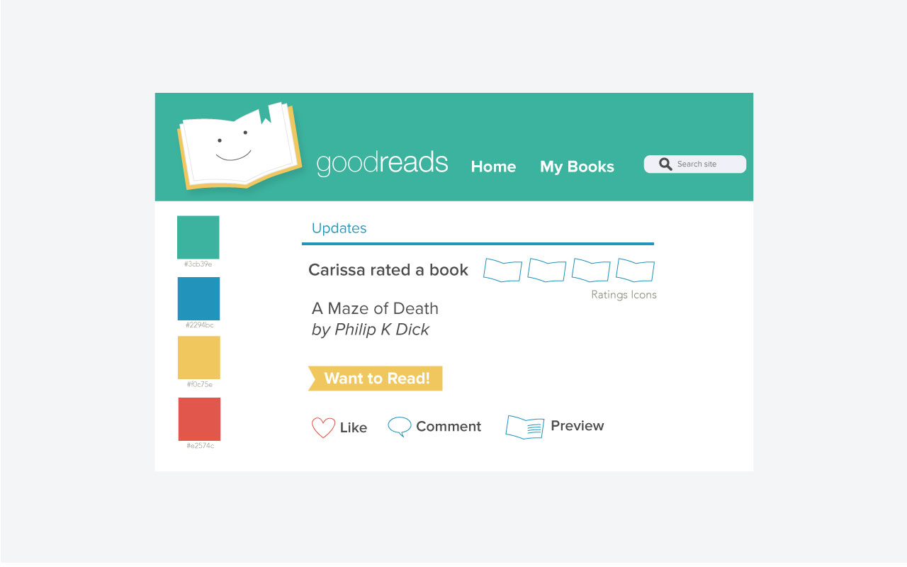

Project Brief
This project was a redesign for the GoodReads web app. I designed three pages (Home Page, User Profile and My Books Page) for this app with pixel perfect precision in Illustrator.
Tools Used
Adobe Illustrator
Process
After user interviews, S.W.O.T. (Strengths, Weaknesses, Opportunities, Threats) analysis, competitive market analysis and defining the main goals of the redesign, the results from my research proved that most users were overwhelmed with the current site. Users often felt confused on where to access content and what actions to take. My goal was to improve the general flow and layout of the three focus pages while reflecting the core values of the company: fun, engaging and light hearted. I created word lists, style tiles, wireframes, and low fidelity mockups before creating pixel perfect mockups.
